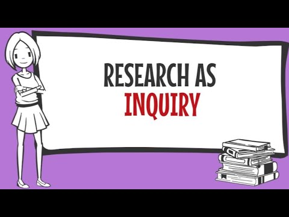
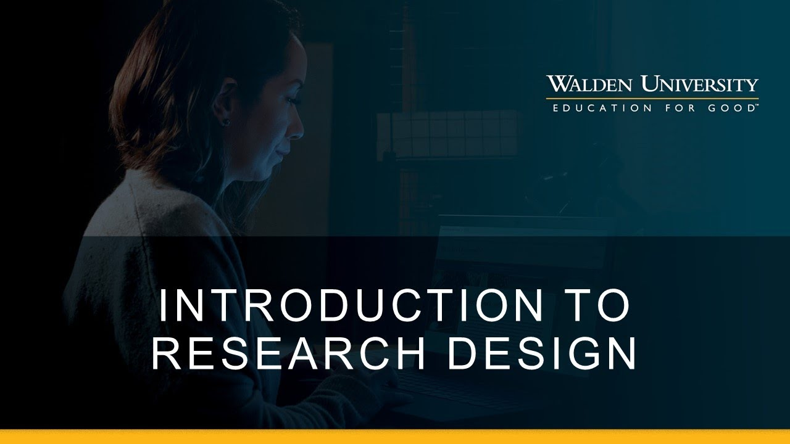
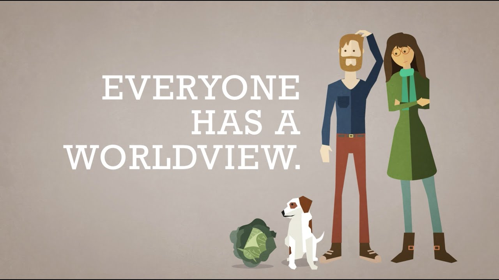
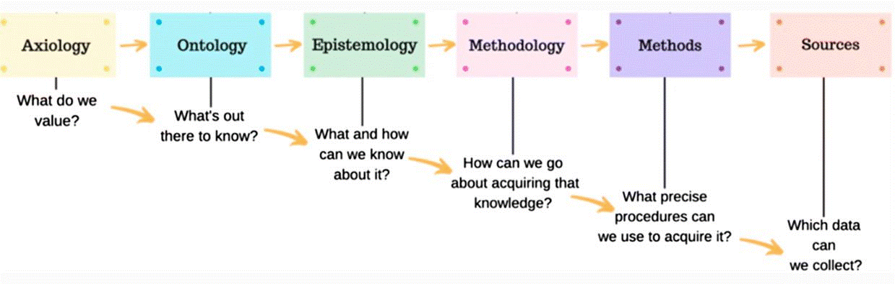
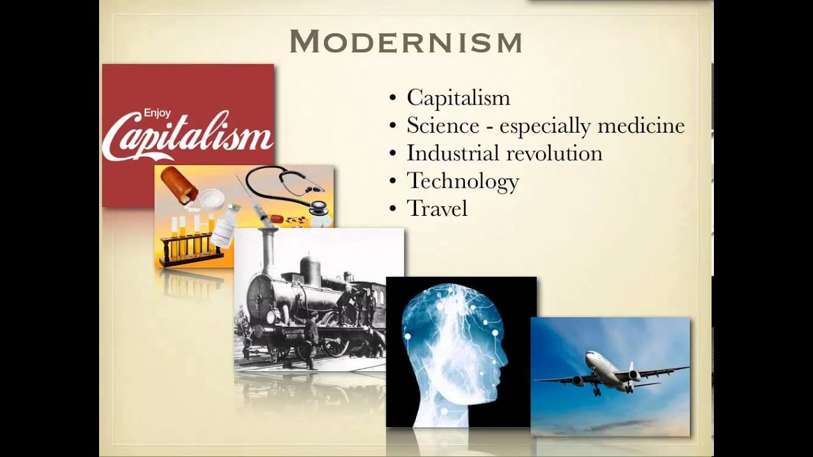

Unit 1 will provide you with a general introduction to inquiry, familiarizing you with foundational concepts related to scholarly inquiry. This unit will focus on the philosophical foundations of research, the connection between leadership and scholarly inquiry, and what evidence-based leadership looks like. By the end of the unit, you will understand the importance of research and begin to evaluate the decision-making processes that you utilize in your professional life.
Topics
Unit 1 is divided into four topics. See the Unit 1 Topics link at the bottom of this page for the course notes on the following topics:
- What is Scholarly Inquiry?
- Leadership and Scholarly Inquiry
- Philosophical Foundations of Research
- Unit Summary
Unit Outcomes
When you have completed this unit, you should be able to:
- Distinguish between informal research and scholarly inquiry.
- Reflect on why evidence-based decision making is important for leadership.
Learning Activities
Here is a list of learning activities you will benefit from in completing this unit. You may find it useful for planning your work:
- Read Chapters 1 and 2 in Introduction to Research in Leadership (Rosch et al., 2023).
- Reflective Journalling activities.
Resources
Here are the resources you will need to complete the unit:
Text
- Rosch, D. M., Kniffin, L. E., & Guthrie, K. L. (2023). Introduction to research in leadership. Information Age Publishing.
E-Resources
The following articles can be found through the TWU library:
- Brown, M. E., & Dueñas, A. N. (2020). A medical science educator’s guide to selecting a research paradigm: Building a basis for better research. Medical Science Educator, 30, 545–53. https://doi.org/10.1007/s40670-019-00898-9
- Wallace, J. R. (2007). Servant leadership: A worldview perspective. International Journal of Leadership Studies, 2(2), 114-32. https://www.psychodramaaustralia.edu.au/sites/default/files/serveant_leadership_-_worldview.pdf
Note: All other resources will be provided online.
What is Scholarly Inquiry?
Inquiry is “the process of developing skills to arrive at understandings of a problem, an issue, or a phenomenon, through the process of asking good questions, searching out good evidence, and arriving at well-reasoned conclusions” (Penner, 2017).
By now you are well aware of the applied nature of the Master of Arts (MA) in Leadership program. This feature may be an important part of what attracted you to the program. Why, then, study research methods? Why worry about scholarly inquiry? This course in scholarly inquiry will help you develop systematic thinking skills applicable in all realms of leadership and everyday life. As Rosch et al. (2023) note, research focuses professional knowledge to inform your leader-centric, group-centric, and context-centric concepts, guiding the broader view of your leadership position and contributing to your overall leadership practice (p. 23). Moreover, your leadership practice is ideally evidence-based; that is, based on evidence derived from systematic scholarly inquiry.
Indigenous (Canada’s First Peoples) knowledge systems offer a complementary perspective to scholarly inquiry by emphasizing relational, holistic, and ethical dimensions of knowledge. Unlike Eurocentric models that often compartmentalize knowledge, Indigenous inquiry focuses on the interconnectedness of all living things and aims to achieve harmony between people, the environment, and spirituality. As Battiste (2005) explains, Indigenous methodologies prioritize ethical relationships and community well-being, filling gaps in mainstream research by addressing the moral responsibilities of researchers.
For example, when Indigenous scholars ask questions, they often consider their impact on future generations and the environment. This approach enriches traditional inquiry by integrating ethical considerations into the process of evidence-gathering and analysis.
Activity: Learning Activity
According to Plano-Clark and Creswell (2014), “research is a process of steps used to collect and analyze information in order to increase our knowledge about a topic or an issue” (p.4) and it is different than informal research.
📺 Watch the following video “Research as Inquiry” from Bertrand Library at Bucknell University (2023) that gives an overview of research as inquiry:

📖 Read Chapters 1 and 2 in in Introduction to Research in Leadership (Rosch et al., 2023).
✏️ Start a Reflective Journal. This journal is not submitted or graded, but is an opportunity for you to reflect on, and engage with, the course content. The questions posed will often help you prepare for your assignments and are designed to help you successfully achieve the learning outcomes for each unit.
Next, write about the following in your Reflective Journal:
- How would you define research?
- Describe your experience with “research.”
- Have you taken an undergraduate statistics course?
- Is this your first time learning about research?
- Have you published your own scientific paper?
- How might relational approaches to inquiry change the way you frame research questions?
- How can integrating ethical considerations into research contribute to leadership practices?
Note: Your Journal is not graded but will help you in your assessment for this unit.
Leadership and Scholarly Inquiry
On what basis are sound decisions made? What evidence do leaders rely upon for best outcomes? The need to evaluate evidence for best practices in leadership decision-making is widely acknowledged. Patton (2002) observes that “the emphasis on knowledge generation disseminated in the form of best practices has swept like wildfire through all sectors of society” (p. 329).
The MA in Leadership program emphasizes a vision of best practices in leadership. What do is meant by this? Put simply, “best practices” refers to those practices and initiatives that result in the best possible outcomes. What qualifies something as best practice? Identifying best practices starts by understanding the common sources of evidence available to leaders.
Take a moment to think about a recent decision you made as a leader. On what did you base this decision? Previous experience? Values? Company policy? Empirical evidence (e.g., data derived from research)? Expert opinion? Systematic inquiry, as represented by research, is one tool that leaders can use to inform best practices and their decision-making process.
Systematic inquiry is hardly new; first century writings demonstrate Bible evidence of systematic, logical, and empirical inquiry.
Consider the following passage from Luke, a physician trained in empirical methods of his day:
Many have undertaken to draw up an account of the things that have been fulfilled among us, just as they were handed down to us by those who from the first were eyewitnesses and servants of the word. With this in mind, since I myself have carefully investigated everything from the beginning, I too decided to write an orderly account for you, most excellent Theophilus, so that you may know the certainty of the things you have been taught (The Bible, New International Version, 2011, Luke 1:1-4).
How does the research process differ from managerial activities such as decision-making and problem solving? Research shares with decision-making and problem-solving the systematic and disciplined procedure of identifying an issue or problem, deciding on an approach, formulating a plan, collecting and analyzing data, drawing conclusions, and implementing decisions based on this rigorous process. What distinguishes research from generic or everyday problem solving is its commitment to advance or generate knowledge that typically will be communicated to the larger academic or scientific community. Since the beginning of the 21st century, there has been remarkable growth in the foundations of research and research methodologies across the natural, applied, and social sciences, as well as the humanities.
Boyer’s Model of Scholarship
The MA in Leadership program is focused on applied scholarship. In defining this, Boyer’s four-part Model of Scholarship (1997, as cited in Nibert (n.d.)) is useful. Boyer’s typology identifies four domains of scholarship: discovery, integration, application, and teaching. Marta Nibert (n.d.) discusses the model in her paper titled “Boyer’s Model of Scholarship.”
In the section titled “Application,” Nibert (n.d.) notes that the scholarship of application:
focuses on using research findings and innovations to remedy societal problems. Included in this category are service activities that are specifically tied to one’s field of knowledge and professional activities. Beneficiaries of these activities include commercial entities, non-profit organizations, and professional associations (para. 4).
Though Nibert’s primary audience is the professoriate, this material is relevant for MA Leadership learners. Application is highlighted because this program was designed to focus on the scholarship of application, although work in the capstone will likely include one or more of the other domains.
Scholarship of Discovery
Boyer’s Scholarship of Discovery is the type of scholarship associated with traditional scholarly research. “Research is a systematic process of collecting, analyzing and interpreting information (data) in order to increase our understanding of a phenomenon abut which we are interested or concerned” (Leedy & Ormrod, 2010, p. 2). Boyer’s Scholarship of Discovery is often referred to as primary research. Primary research is narrowly focused and contributes to the body of knowledge by helping people understand one isolated part of reality in detail in the hopes that this understanding can be generalized to a broader part of reality. In traditional research, the Scholarship of Discovery falls into two distinct genres: quantitative and qualitative research. Each of these genres manifest in numerous variations, including hybrid models involving both quantitative and qualitative elements, designed for and suited to differing research questions.
Scholarship of Integration
Boyer’s Scholarship of Integration is “the attempt to arrange relevant bits of knowledge and insight from different disciplines into broader patterns that reflect the actual interconnectedness of the world” (Boyer, as cited in Jacobsen & Jacobsen, 2004, p. 51).
The Scholarship of Integration often involves interdisciplinary collaboration and requires critical analysis and review of knowledge, followed by the creative synthesis of ideas to address specific topics or issues.
Scholarship of Application
The Scholarship of Application is “the scholarship of engagement; seeking to close the gap between values in the academy and the needs of the larger world” (Boyer, as cited in Jacobsen & Jacobsen, 2004, p. 51). In the Scholarship of Application, knowledge is applied to the solution of societal needs and practice. In most cases, knowledge stemming from the Scholarship of Discovery and the Scholarship of Integration informs the solutions to problems. These scholarships are often associated with the context of formal education. Although the Scholarship of Application may happen within formal education contexts, it is most often associated with other settings (Boshier, 2009, p. 6).
Scholarship of Teaching
Finally, the Scholarship of Teaching is “the scholarship of sharing knowledge” (Boyer, as cited in Jacobsen & Jacobsen, 2004, p. 51). The Scholarship of Teaching involves the reflective analysis of the knowledge about teaching and learning. This knowledge base itself is the product of the Scholarships of Discovery, Integration and Application combining as “active ingredients of a dynamic and iterative teaching process” (Boshier, 2009, p. 5). Boyer’s typology originally identified as the Scholarship of Teaching has expanded and is now widely known in literature as the Scholarship of Teaching and Learning (Boshier, 2009).
Boshier contends that Boyer’s four domains were conceived holistically as elements that overlap and interact, not as discrete elements, appearing in any predictable order, and are better viewed as an operating system than a list of discrete elements (Boshier, 2009, pp. 4–5). As such, it is helpful to view the model as a Venn diagram where each scholarship domain overlaps (see Figure 1).
Figure 1
Boyer’s Model of Scholarship
Note: This figure demonstrates how the four domains of Boyer’s Model of Scholarship overlap and interact to create a holistic system of scholarship.
LDRS 591 is designed to help you understand types of research, identify a research topic, develop a research question, and decide whether you will pursue a thesis track in your MA Leadership studies. Should you choose the thesis track, you will engage in Scholarship of Discovery, meaning you will conduct primary research.
Note: Choosing the thesis track requires approval from the Department of Leadership Program Director.
Most program students choose the capstone track, in which they conduct secondary research.
Activity: Learning Activity
📺 Watch the following video “Introduction to Research Design” from Research & Doctoral Services at Walden University (2015) where Dr. Patton introduces the concept of research as a scholar-practitioner:

✏️ Respond to the following in your Reflective Journal:
- Describe at least one example of a decision you have made as a leader.
- Consider the factors that went into that decision making process (e.g., values, research, policy, past experience, expert opinion).
- What do you consider as “evidence” in your decision making?
- In your own words, why is evidence-based decision-making important in leadership?
Note: your Journal is not graded but will help you in your assessment for this unit.
Philosophical Foundations of Research
A professor once observed that a fundamental attribute of being human is the tendency to ask questions. Humanity is especially interested in three fundamental questions:
- What is real?
- What is true?
- What is good?
The philosophical category of metaphysics is concerned with what is real, and what is the nature of reality. The philosophical category of epistemology is concerned with the truth, and the nature and process of knowing. The philosophical category of axiology is concerned with what is good and how people can determine the nature of goodness. Much of history is a chronicle of the different ways people have answered these three fundamental questions. How people answer these questions reveals their perspective and worldview.
Every person bases their own thoughts, decisions, and actions on what is called a worldview. A worldview is “an interpretive framework through which one makes sense of themselves, other people, and the world around them” (Geisler & Watkins, 2003). It is like a pair of glasses that you wear when you are observing things about yourself, other people, and the world in which you live.
📺 Watch the following short video “What’s Your Worldview? (Quiz)” by the Impact 360 Institute (2014) that explains the concept of worldview:

A discussion about worldview, or your perspective, is foundational to what you want to accomplish in this course.
Throughout this course you will continuously consider:
- On what basis are sound decisions made?
- What evidence do leaders rely upon for best outcomes when they are making decisions?
Each person has a preference for obtaining truth or a framework for understanding ourselves, others, and the world, and personal preferences abound. Researchers and consumers of research approach knowledge, learning, and life with a particular perspective. Understanding that perspective is essential before beginning the research journey and is especially important in leadership roles.
Figure 1. Research Paradigms (Brown & Dueñas, 2020)

Source: https://link.springer.com/article/10.1007/s40670-019-00898-9
📺 Watch the following helpful video “Ontology, Epistemology, Methodology and Methods in Research Simplified!” by Laura Killam (2015) that explains Paradigms, Ontology and Epistemology:
It is important to be aware of your worldview before you enter the research journey because it will inform the types of questions that you ask and the processes that you use to find the answers to your questions.
As an example, review this Christian worldview and explore how it can be applied to the research journey:
A Christian worldview asserts that God has created the world and everything in it, and that truth is arrived at through a study of God’s specific revelation (the Bible) and general revelation (creation). Christians believe not only in studying and understanding truth, but they also believe in a personal God that has revealed Himself through this created world.
The Christian worldview can be summarized in three words: Creation, Fall, and Redemption. Consider what these terms mean in the context of worldview. Initially, when God created the world, it was all good, whole, and harmonious. God created man in His own image. Originally man was created healthy in body, soul, and spirit (The Bible, New International Version, 2011, Genesis 1:26-27, 31). As people rebelled against God, causing the Fall, the presence of sin corrupted all aspects of God’s good creation, and brought about much suffering. Where there was formerly harmony and wholeness, we now experience ourselves, our relationships, and the world around us as fractured, broken, and full of dis-ease (a literal discomfort with who we are) (The Bible, New International Version, 2011, Genesis 3).
Despite the brokenness, Christians believe that God is actively working to bring about restoration and wholeness to His entire creation. Through Christ’s redemptive work on the cross, people are reconciled to God and are challenged to make all things as they were created and meant to be–very good. Redemption means that all things are made new in Christ(The Bible, New International Version, 2011, Colossians 1:19-20).
The framework of Creation, Fall, and Redemption is important because it allows people to enter a discussion about research with confidence knowing that God’s redemptive work touches this area. Christians believe that we are called to study creation with the desire to take the knowledge we gain and use it to help and bless others; to work toward the restoration and healing of God’s creation. Christians are called to inquire, investigate, and ask questions, always with a view to serve others.
Another example of a worldview is an Indigenous worldview, which grounds reality, truth, and goodness in relational and interconnected terms. For example, drawing from Battiste (2005) and Menzies (2001), Indigenous philosophies often emphasize that reality is inherently interconnected and inseparable from the land, community, and spirituality (metaphysics). This relational understanding challenges individualistic approaches to research. Further, Indigenous ways of knowing prioritize collective experience, oral traditions, and lived knowledge passed down through generations (epistemology). Knowledge is not only “discovered” but also co-created and shared with respect to its cultural and environmental context. Finally, from an Indigenous perspective, what is “good” is often framed as what sustains harmony and well-being within the community and environment, making ethics a central consideration in the research process (axiology).
As Menzies (2001) explains, incorporating Indigenous perspectives into research requires rethinking the researcher’s role, emphasizing reciprocity, mutual respect, and the co-creation of knowledge with the communities involved.
Note: It is beyond the purpose of this course to go deeper into this topic other than to make the point that our way of knowing and understanding the world around you—your worldview—influences how you approach all of life, including how you approach research and how you use research to inform your decision-making process.
Activity: Learning Activity
📺 Watch the following video where Gary Gramenz (2013) explains “Philosophical Foundations for Research Methodology”:

📖 Read “Servant Leadership: A Worldview Perspective” (Wallace, 2007).
📖 Read “A Medical Science Educator’s Guide to Selecting a Research Paradigm: Building a Basis for Better Research” (Brown & Dueñas, 2020).
✏️ Reflect on your own worldview. Then answer the following in your Reflective Journal:
- What motivates you? What are you driven by? (e.g. funding, social justice, the common good)
- Do you believe there is “one verifiable reality,” or that “multiple socially constructed realities” exist?
- In what ways can your research contribute to the well-being of the communities you are studying?
- What do you think counts as knowledge within the world?
- How do you think knowledge is acquired?
- Based on the Brown and Duenas article, what research paradigm resonates with you the most? (i.e., positivist, post-positivist, social constructivist, critical theory). Why does it resonate with you?
Note: your Journal is not graded but will help you in your assessment for this unit.
Summary
In this unit you learned about what scholarly inquiry is, how to become a scholarship practitioner, and what a worldview is. You also learned about the importance of scholarly inquiry for leadership, the implications of evidence-based decision making for leaders. In Unit 2, you will learn about types of scholarly research.
Checking Your Learning
Now that you completed the learning activities and assignments for this unit, check the list below to ensure you can do the following:
- Can you distinguish between informal research and scholarly inquiry?
- Can you discuss how scholarly inquiry applies to everyday decision making?
- Reflect on why evidence-based decision making is important for leadership?
Review the unit topics more in depth as needed or continue to the next unit.